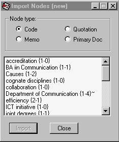

Atlast.ti Version 4.2 London: Scolari, Sage Publications Software, 2000. CD-ROM, Short User's Manual vi, 110pp. Price £250.00 (Single user licence)I have been using Atlas.ti for a number of years, whenever I have had some qualitative analysis to perform. It is one of a number of packages for such work, of which the best known, apart from Atlas.ti, are NUD*IST (and its derivative NVivo from the same company), The Ethnograph, and HyperRESEARCH. Of these, I have tried out NUD*IST and HyperRESEARCH, but I settled on Atlas.ti as having the easiest learning curve and the most user-friendly interface. I have never regretted the choice, since the package does everything I need. Atlas.ti had its origins in a system developed as part of a research project in the Department of Psychology, Technical University of Berlin, between 1989 and 1992. From 1993 it was developed by its author, Thomas Muhr, into a commercial product, with a Windows version emerging in 1994. From the beginning there was a strong orientation towards the needs of potential and, subsequently, actual users. There is a very useful mailing list for users of the package, which connects experienced users with beginners – one is always guaranteed a prompt and helpful response to any question, no matter how naive. At the heart of the system is the management of text (along with 'documents' of other kinds such as pictures, sound clips, videos, etc.). Staying with text, with which I have most experience, the package enables the segmenting of a text into passages to be indexed. A passage may be a page, a paragraph, a sentence, or even part of a sentence. As the manual notes: Textual research activities include the breaking down, or segmenting, of the indexed documents into passages (selections to be indexed), the adding of your comments to respective passages (note-making/annotating), as well as the filing or indexing of all selected primary document passages, secondary text materials, annotations, and memos to facilitate their retrieval. The act of comparing noteworthy segments leads to what we might all see as the start of actual theory-building; a creative conceptualization phase or moment where one's own ideas begin to materialize. This paragraph tells, in effect, that a passage may be indexed, annotated, and/or have memos written about it - perhaps, for example, to note one's first thoughts about theoretical interpretation. The easiest way to show how this is done is by an example. Figure 1, shows part of the Atlas.ti interface, with a text document in the left-hand frame. In the right-hand frame are some symbols with keywords (or 'codes') and a bracket indicating the size of the 'passage' that has been indexed. In the actual package, when you click on one of the keywords, the relevant passage is highlighted. The small window at the top left indicates the document being indexed - 'P 1: buffalo.txt' and next to it the 'quotations window', in which we see '1:2 Department of Communication (13:13)' signifying that this phrase on line 13 has been indexed as a passage. The rightmost window in the example is the 'codes window' with a drop-down list of the codes so far assigned, the first of which happens to be identical to the passage selected. Another window, not visible in the picture, lists the 'memos' assigned to a passage or a code. We index items with codes by highlighting a term or a block of text and then right-clicking on the passage. At this, a pop-up menu appears, one element of which is 'coding', left-clicking on this brings up a further pop-up menu which offers, 'open coding', i.e., devising a code of one's one making; 'code in vivo', i.e., using the highlighted term or phrase as a code; 'code by list', i.e., selecting from the code list (which pops-up to allow selection); and 'quick coding', i.e., assigning a code already highlighted in the code list – this is useful when assigning the same term to a series of passages in a document. As soon as codes are created, by open coding or coding in vivo, they are assigned to the code list. Figure 2 shows a more intensively coded passage from the same document. The second main feature of Atlas.ti is described as operating at the conceptual level: Beyond mere code & retrieve, ATLASlti's unique networking feature allows you to visually "connect" selected passages, memos, and codes, into diagrams which graphically outline complex relations. This feature virtually transforms your text-based work space into a graphical "playground" for constructing concepts and theories based on relationships. This process sometimes renders yet other relations even more obvious than before, with the ability to instantly revert back to your notes or primary text selection. Such textual/conceptual traversability is unique to ATLASlti. It is very easy to build networks: you simply open a new network from the 'Networks' menu and then select 'Import nodes' from the 'Nodes menu' and then highlight as many codes, quotations, memos, or even primary documents, as you wish. This ability to construct network diagrams from any material you have prepared is one of the strengths of the system Figure 3 shows the import nodes menu: 
Once the nodes have been selected, they are imported into the network work-space where they can be moved around by clicking the mouse on them and moving the mouse. One can then establish physical links between nodes and identify the relationship implied in the link. Figure 4 shows a network for the document we indexed earlier. Each symbol on a link indicates a type of relationship and one can define more relationship types. In the diagram shown, the following links are used: isa (the hierarchical relationship, 'pear isa fruit'), == (a is associated with b), [ ] (a is part of b), => (a is a cause of b), *} (a is a property of b). This feature gives Atlas.ti great flexibility in enabling the user to think theoretically about the concepts s/he has used to index a document or document set, or simply to begin to understand the hidden structure of a text. Atlas.ti's operations are also described as embodying a 'VISE principle', that is:
Atlas.ti has far more features than can be described in a relatively brief review of this kind, but a great deal more information can be found at the Web site, from where you can download a demo version, or find links to projects that have used the package, find quotations from another review and discover much more. There is also a PowerPoint presentation, which I have downloaded and provided on this site, if you want to learn more. Finally, you can publish your analyses on the Web: Atlast.ti will automatically generate an HTML version of your 'hermeneutic unit', including the code list, quotation list, etc., and the network views, and whatever other material you have. Here is one such presentation, from a unit which I devised for an introduction to the package, which is simply called Parrot. If you carry out qualitative research, you will find that Atlas.ti meets all your needs for the analysis of textual and other data - you can even set up a quantitative analysis in SPSS based on your qualitative analysis. Professor Tom Wilson 5th April 2001 |
){kind=link}
){kind=link}
){kind=link}